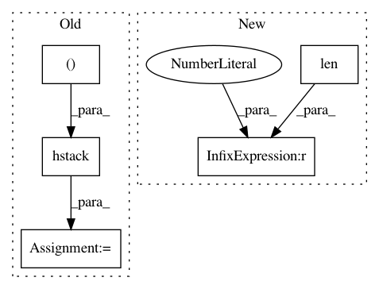

956268db11e19b28ce4e9b75a38862694f397090,chainercv/links/model/fpn/head.py,Head,__call__,#Head#Any#Any#Any#,40
Before Change
self.xp.empty((0, self._n_class), dtype=np.float32)))
continue
roi_iltrb = self.xp.hstack(
(roi_indices[l][:, None], rois[l][:, [1, 0, 3, 2]])) \
.astype(np.float32)
h = roi_align_2d(
h, roi_iltrb,
self._roi_size, self._roi_size,
self._scales[l], self._roi_sample_ratio)
After Change
hs_.append(h)
hs = hs_
if len(hs) == 0:
locs = chainer.Variable(
self.xp.empty((0, self._n_class, 4), dtype=np.float32))
confs = chainer.Variable(
self.xp.empty((0, self._n_class), dtype=np.float32))
In pattern: SUPERPATTERN
Frequency: 3
Non-data size: 5
Instances
Project Name: chainer/chainercv
Commit Name: 956268db11e19b28ce4e9b75a38862694f397090
Time: 2018-12-11
Author: Hakuyume@users.noreply.github.com
File Name: chainercv/links/model/fpn/head.py
Class Name: Head
Method Name: __call__
Project Name: automl/auto-sklearn
Commit Name: 4c3790c4553cef37eae4a4e308307f05772579cf
Time: 2014-12-22
Author: feurerm@informatik.uni-freiburg.de
File Name: AutoML2015/models/evaluate.py
Class Name:
Method Name: evaluate
Project Name: MorvanZhou/tutorials
Commit Name: 9352eece98d1205a01c2c7603538ea08a3d1f639
Time: 2017-04-02
Author: morvanzhou@gmail.com
File Name: Reinforcement_learning_TUT/experiments/Solve_BipedalWalker/A3C.py
Class Name: Worker
Method Name: work